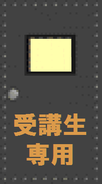

豊橋技術科学大学：Summer TECH-CAMP 2020
「ビジュアルプログラミング言語 Scratch 教材ハッカソン」
情報・知能工学系
河合 和久
一般公開用資料目次
指導案
Scratch（MIT）
授業報告
高専体験実習「プログラミング学習ゲームの開発」（2017）
時習館ＳＳＨ：ＴＵＴラボ「カードゲーム・ハッカソン」（2016）
豊橋プログラミング教育勉強会
東三河サイエンスカフェ
文部科学省：新しい学習指導要領
豊橋技術科学大学
・
Summer TECH-CAMP 2020

２０２０（Ｒ０２）年度版
Copyright (c) 2020, Kazuhisa Kawai, All Rights Reserved.
Please send comments to:
kawai@tut.jp
Last updated August 27, 2020
Since August 17, 2020